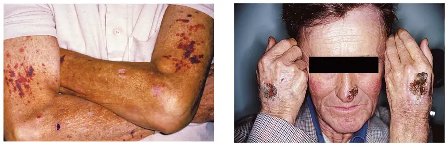

نسخه استخراجشده؛ ترجمه یا تأیید علمی انجام نشده است. وضعیت: captured
مرد ۵۵ سالهای را صبح دیدی و یک مولر پایینش را بیدردسر کشیدی؛ لخته هم سر جایش بود. ساعت ۱۰ شب زنگ میزند که هنوز از جای دندان خون میآید. چرا خونریزی ساعتها بعد شروع شده است؟

برای جواب باید بدانی بدن خونریزی را در چه مراحلی بند میآورد:
نکتهی طلایی: فاکتورهای II، VII، IX و X برای ساخته شدن به ویتامین K نیاز دارند. این ویتامین از سبزیهای برگسبز و باکتریهای روده میآید، و وارفارین دقیقاً همین چهار فاکتور را هدف میگیرد.
اگر بیمار سابقهی خونریزی دارد یا در معاینه نشانهای دیدی، این چهار آزمایش غربالگری را درخواست کن:
شمارش پلاکت فقط تعداد را نشان میدهد، نه عملکرد را؛ پس اثر آسپرین را نمیبیند. زمان سیلان (bleeding time) هم دیگر آزمایش معتبری نیست.
اشتباه رایج: آزمایش روتین پیش از هر کار جراحی. بیماری که سابقهی خونریزی ندارد و معاینهاش طبیعی است، برای کار کمخطر آزمایش نمیخواهد؛ بیمار با سابقهی مثبت را به پزشک یا هماتولوژیست ارجاع بده.